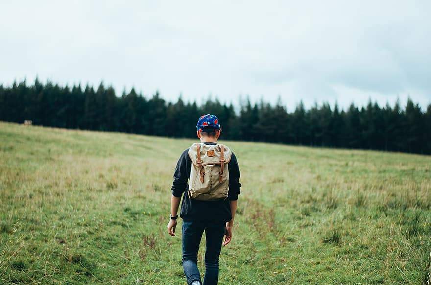

Pakk med deg turvett hele året
Turvettregelene
Naturen har plass til alle. Vi ønsker å få flest mulig ut på tur, samtidig som vi tar godt vare på naturen og oss selv. For å få til dette er det viktig at alle viser godt turvett!
Fjellvettreglene
Godt fjellvett handler ikke bare om hva du skal og ikke skal, men om å ha et bevisst forhold til valgene du tar før, under og etter tur. Uansett om du er en fersking eller en dreven fjellvandrer, anbefaler vi at du har Fjellvettreglene med deg på tur - hele året.
Miljøvettreglene
Det vi er glade i, tar vi vare på. Sammen med POW Norge har DNT ung utarbeidet syv enkle miljøvettregler for et mer sporløst friluftsliv.